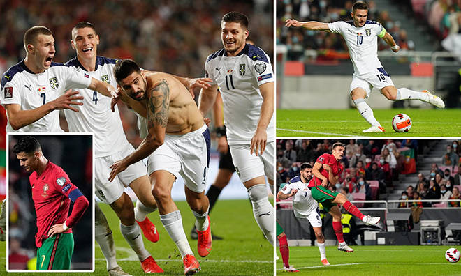
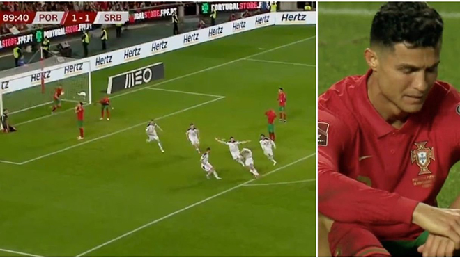

Bồ Đào Nha phải đá play-off thể thức mới, Ronaldo có nguy cơ lỡ hẹn với World Cup
Việc đánh mất ngôi nhất bảng A vào tay Serbia khiến Bồ Đào Nha mất vé trực tiếp dự VCK World Cup 2022. Trước mắt Ronaldo và đồng đội sẽ là vòng play-off đầy bất trắc.
Tại kỳ vòng loại World Cup 2022, thể thức đá play-off đã có những khác biệt so với trước đây. Sẽ không chỉ có 10 đội nhì bảng chia cặp đá với nhau mà sẽ có thêm các đại diện là hai đội có thành tích tốt nhất từ Nations League mà không xếp Top 2 ở vòng loại World Cup. Cụ thể: ở bảng E, dù Wales (thứ nhì, 14 điểm) hay Czech (thứ ba, 11 điểm) xếp thứ ba chung cuộc sau loạt trận rạng sáng mai thì cả hai đều giành suất đá play-off. Tại bảng F, Áo cũng dự vòng play-off theo con đường này.
Như vậy, vòng play-off cũng đã xác định được 8 đội là Bồ Đào Nha, Nga (hạt giống), Áo, Bắc Macedonia (không xếp hạt giống), CH Czech, Scotland, Thụy Điển, Xứ Wales (hạt giống 1 hoặc 2). 4 vé còn lại thuộc về các đội nhì bảng C, D, G, I. 12 đội tuyển này sẽ chia làm ba nhánh đấu play-off theo thể thức 1 lượt để chọn 3 đội dự VCK.
Việc chọn 3 suất từ 12 đội với thể thức loại trực tiếp 1 lượt rõ ràng khó khăn hơn và tiềm ẩn rủi ro nhiều hơn so với việc chỉ phải đá play-off hai lượt trận như trước đây. Trong số các đội đã giành vé dự play-off, Thụy Điển, Nga và Xứ Wales đều rất đáng gờm. Trong khi đó, đội nhì bảng C sẽ là Ý hoặc Thụy Sĩ, nhì bảng D là Phần Lan hoặc Ukraina, nhì bảng G là Thổ Nhĩ Kỳ hoặc Na Uy, trong khi nhì bảng G là Anh hoặc Ba Lan.
Dù được xếp là 1 trong 3 hạt giống ở vòng play-off này, nhưng khả năng Bồ Đào Nha phải đụng 1 thậm chí 2 đối thủ mạnh là không hề nhỏ. Một dấu hiệu đáng lo khác: trong 4 trận đấu vòng loại gần nhất, chân sút chủ lực Ronaldo chỉ nổ súng vào lưới Luxembourg quá yếu, và tịt ngòi hoàn toàn trước Azerbaijan (3-0), Ireland (0-0), và Serbia (1-2). Nếu Ronaldo lỡ hẹn với Qatar 2022, thì có lẽ cơ hội dự World Cup một lần nữa với anh đã chấm dứt bởi đến năm 2026 thì tiền đạo MU đã 41 tuổi.
Ronaldo khoác áo tuyển Bồ Đào Nha từ năm 2003 và đã dự 4 VCK World Cup liên tiếp (2006, 2010, 2014, 2018). Anh đã ghi 115 bàn thắng (kỷ lục thế giới) sau 184 trận khoác áo đội tuyển quốc gia.
 099999999
099999999